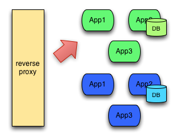
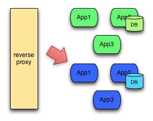
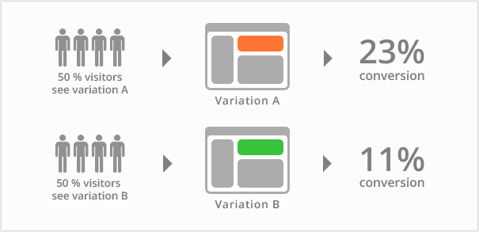
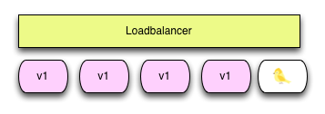
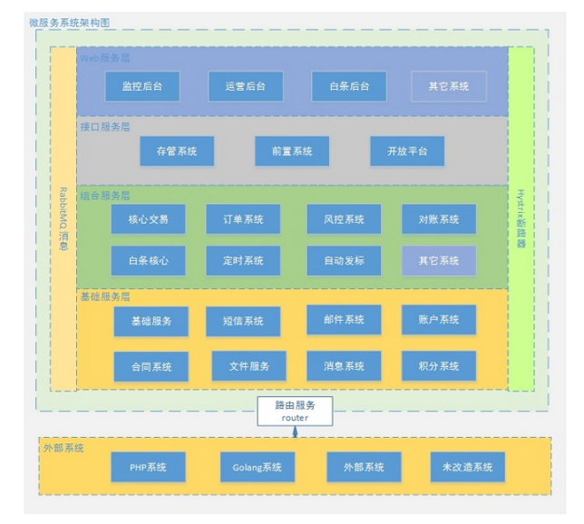

前记
最近的任务是学习 Sping Cloud，这期间将完成从概念到 demo 的搭建。
本章主要是介绍部署的方式和 Spring Cloud 的一些概念。
蓝绿部署、A/B测试、灰度发布
蓝绿部署
蓝绿部署是一种以可预测的方式发布应用的技术，目的是减少发布过程中服务停止的时间。
简单来说，你需要准备两个相同的环境（基础架构），在蓝色环境运行当前生产环境中的应用，也就是旧版本应用，如图中App1 version1、App2 version1、App3 version3。

当你想要升级App2到version2，在蓝色环境中进行操作，即部署新版本应用，并进行测试。如果测试没问题，就可以把负载均衡器／反向代理／路由指向蓝色环境了。

随后你需要监测新版本应用，也就是App2 version2是否有故障和异常。如果运行良好，就可以删除App2 version1使用的资源。如果运行出现了问题，你可以通过负载均衡器指向快速回滚到绿色环境。
理论上听起来很棒，但还是要注意一些细节：
当你切换到蓝色环境时，需要妥当处理未完成的业务和新的业务。如果你的数据库后端无法处理，会是一个比较麻烦的问题；
有可能会出现需要同时处理“微服务架构应用”和“传统架构应用”的情况，如果在蓝绿部署中协调不好这两者，还是有可能导致服务停止的；
需要提前考虑数据库与应用部署同步迁移/回滚的问题；
蓝绿部署需要有基础设施支持；
在非隔离基础架构（VM、Docker等）上执行蓝绿部署，蓝色环境和绿色环境有被摧毁的风险。
A/B测试
A/B测试跟蓝绿部署完全是两码事。
A/B测试是用来测试应用功能表现的方法，例如可用性、受欢迎程度、可见性等等。A/B测试通常用在应用的前端上，不过当然需要后端来支持。

A/B测试与蓝绿部署的区别在于，A/B测试目的在于通过科学的实验设计、采样样本代表性、流量分割与小流量测试等方式来获得具有代表性的实验结论，并确信该结论在推广到全部流量可信；蓝绿部署的目的是安全稳定地发布新版本应用，并在必要时回滚。
A/B测试和蓝绿部署可以同时使用。
灰度发布／金丝雀发布
灰度发布是在原有版本可用的情况下，同时部署一个新版本应用作为“金丝雀”（金丝雀对瓦斯极敏感，矿井工人携带金丝雀，以便及时发现危险），测试新版本的性能和表现，以保障整体系统稳定的情况下，尽早发现、调整问题。

灰度发布／金丝雀发布由以下几个步骤组成：
- 准备好部署各个阶段的工件，包括：构建工件，测试脚本，配置文件和部署清单文件。
- 从负载均衡列表中移除掉“金丝雀”服务器。
- 升级“金丝雀”应用（排掉原有流量并进行部署）。
- 对应用进行自动化测试。
- 将“金丝雀”服务器重新添加到负载均衡列表中（连通性和健康检查）。
- 如果“金丝雀”在线使用测试成功，升级剩余的其他服务器。（否则就回滚）。
Spring Cloud
Spring Cloud是一系列框架的有序集合。它利用Spring Boot的开发便利性巧妙地简化了分布式系统基础设施的开发，如服务发现注册、配置中心、消息总线、负载均衡、断路器、数据监控等，都可以用Spring Boot的开发风格做到一键启动和部署。Spring并没有重复制造轮子，它只是将目前各家公司开发的比较成熟、经得起实际考验的服务框架组合起来，通过Spring Boot风格进行再封装屏蔽掉了复杂的配置和实现原理，最终给开发者留出了一套简单易懂、易部署和易维护的分布式系统开发工具包。
微服务是可以独立部署、水平扩展、独立访问（或者有独立的数据库）的服务单元，Spring Cloud就是这些微服务的大管家，采用了微服务这种架构之后，项目的数量会非常多，Spring Cloud做为大管家需要管理好这些微服务，自然需要很多工具框架来帮忙。
Spring Cloud的核心功能：分布式/版本化配置、服务注册和发现、路由、服务和服务之间的调用、负载均衡、断路器、分布式消息传递。

各组件配置使用运行流程：
- 请求统一通过API网关（Zuul）来访问内部服务
- 网关接收到请求后，从注册中心（Eureka）获取可用服务
- 由Ribbon进行均衡负载后，分发到后端具体实例
- 微服务之间通过Feign进行通信处理业务
- Hystrix负责处理服务超时熔断
- Turbine监控服务间的调用和熔断相关指标
上图只是Spring Cloud体系的一部分，Spring Cloud共集成了19个子项目，里面都包含一个或者多个第三方的组件或者框架！
Spring Cloud 工具框架
- Spring Cloud Config 配置中心，利用git集中管理程序的配置。
- Spring Cloud Netflix 集成众多Netflix的开源软件。
- Spring Cloud Bus 消息总线，利用分布式消息将服务和服务实例连接在一起，用于在一个集群中传播状态的变化。
- Spring Cloud for Cloud Foundry 利用Pivotal Cloudfoundry集成你的应用程序。
- Spring Cloud Cloud Foundry Service Broker 为建立管理云托管服务的服务代理提供了一个起点。
- Spring Cloud Cluster 基于Zookeeper, Redis, Hazelcast, Consul实现的领导选举和平民状态模式的抽象和实现。
- Spring Cloud Consul 基于Hashicorp Consul实现的服务发现和配置管理。
- Spring Cloud Security 在Zuul代理中为OAuth2 rest客户端和认证头转发提供负载均衡。
- Spring Cloud Sleuth Spring Cloud应用的分布式追踪系统，和Zipkin，HTrace，ELK兼容。
- Spring Cloud Data Flow 一个云本地程序和操作模型，组成数据微服务在一个结构化的平台上。
- Spring Cloud Stream 基于Redis,Rabbit,Kafka实现的消息微服务，简单声明模型用以在Spring Cloud应用中收发消息。
- Spring Cloud Stream App Starters 基于Spring Boot为外部系统提供spring的集成。
- Spring Cloud Task 短生命周期的微服务，为SpringBooot应用简单声明添加功能和非功能特性。
- Spring Cloud Task App Starters
- Spring Cloud Zookeeper 服务发现和配置管理基于Apache Zookeeper。
- Spring Cloud for Amazon Web Services 快速和亚马逊网络服务集成。
- Spring Cloud Connectors 便于PaaS应用在各种平台上连接到后端像数据库和消息经纪服务。
- Spring Cloud Starters （项目已经终止并且在Angel.SR2后的版本和其他项目合并）。
- Spring Cloud CLI 插件用Groovy快速的创建Spring Cloud组件应用。
当然这个数量还在一直增加…
微服务/Spring Boot/Spring Cloud 三者之间的关系
- 微服务是一种架构的理念，提出了微服务的设计原则，从理论为具体的技术落地提供了指导思想。
- Spring Boot是一套快速配置脚手架，可以基于Spring Boot快速开发单个微服务
- Spring Cloud是一个基于Spring Boot实现的服务治理工具包
Spring Boot专注于快速、方便集成的单个微服务个体，Spring Cloud关注全局的服务治理框架。
如何进行微服务架构演进
当我们将所有的新业务都使用Spring Cloud这套架构之后，就会出现这样一个现象，公司的系统被分成了两部分，一部分是传统架构的项目，一部分是微服务架构的项目，如何让这两套配合起来使用就成为了关键，这时候Spring Cloud里面的一个关键组件解决了我们的问题，就是Zuul。在Spring Cloud架构体系内的所有微服务都通过Zuul来对外提供统一的访问入口，所有需要和微服务架构内部服务进行通讯的请求都走统一网关。如下图：

从上图可以看出我们对服务进行了分类：基础服务、业务服务、前置服务、组合服务。由上到下优先级逐步降低。
基础服务：是一些基础组件，与具体的业务无关。比如：短信服务、邮件服务。这里的服务最容易摘出来做微服务，也是我们第一优先级分离出来的服务。
业务服务：是一些垂直的业务系统，只处理单一的业务类型，比如：风控系统、积分系统、合同系统。这类服务职责比较单一，根据业务情况来选择是否迁移，比如：如果突然有需求对积分系统进行大优化，我们就趁机将积分系统进行改造，是我们的第二优先级分离出来的服务。
前置服务：前置服务一般为服务的接入或者输出服务，比如网站的前端服务、app的服务接口这类，这是我们第三优先级分离出来的服务。
组合服务：组合服务就是涉及到了具体的业务，比如买标过程，需要调用很多垂直的业务服务，这类的服务我们一般放到最后再进行微服务化架构来改造，因为这类服务最为复杂，除非涉及到大的业务逻辑变更，我们是不会轻易进行迁移。
在这四类服务之外，新上线的业务全部使用Sprng Boot/Cloud这套技术栈。就这样，我们从开源项目云收藏开始，上线几个Spring Boot项目，到现在公司绝大部分的项目都是在Spring Cloud这个架构体系中。
经验和教训
架构演化的步骤：
- 在确定使用Spring Boot/Cloud这套技术栈进行微服务改造之前，先梳理平台的服务，对不同的服务进行分类，以确认演化的节奏。
- 先让团队熟悉Spring Boot技术，并且优先在基础服务上进行技术改造，推动改动后的项目投产上线。
- 当团队熟悉Spring Boot之后，再推进使用Spring Cloud对原有的项目进行改造。
在进行微服务改造过程中，优先应用于新业务系统，前期可以只是少量的项目进行了微服务化改造，随着大家对技术的熟悉度增加，可以加快加大微服务改造的范围
传统项目和微服务项目共存是一个很常见的情况，除非公司业务有大的变化，不建议直接迁移核心项目。
服务拆分原则
横向拆分。按照不同的业务域进行拆分，例如订单、营销、风控、积分资源等。形成独立的业务领域微服务集群。
纵向拆分。把一个业务功能里的不同模块或者组件进行拆分。例如把公共组件拆分成独立的原子服务，下沉到底层，形成相对独立的原子服务层。这样一纵一横，就可以实现业务的服务化拆分。
要做好微服务的分层：梳理和抽取核心应用、公共应用，作为独立的服务下沉到核心和公共能力层，逐渐形成稳定的服务中心，使前端应用能更快速的响应多变的市场需求
服务拆分是越小越好吗？微服务的大与小是相对的。比如在初期，我们把交易拆分为一个微服务，但是随着业务量的增大，可能一个交易系统已经慢慢变得很大，并且并发流量也不小，为了支撑更多的交易量，我会把交易系统，拆分为订单服务、投标服务、转让服务等。因此微服务的拆分力度需与具体业务相结合，总的原则是服务内部高内聚，服务之间低耦合。
微服务vs传统开发
使用微服务有一段时间了，这种开发模式和传统的开发模式对比，有很大的不同。
分工不同，以前我们可能是一个一个模块，现在可能是一人一个系统。
架构不同，服务的拆分是一个技术含量很高的问题，拆分是否合理对以后发展影响巨大。
部署方式不同，如果还像以前一样部署估计累死了，自动化运维不可不上。
容灾不同，好的微服务可以隔离故障避免服务整体down掉，坏的微服务设计仍然可以因为一个子服务出现问题导致连锁反应。
给数据库带来的挑战
每个微服务都有自己独立的数据库，那么后台管理的联合查询怎么处理？这应该是大家会普遍遇到的一个问题，有三种处理方案。
严格按照微服务的划分来做，微服务相互独立，各微服务数据库也独立，后台需要展示数据时，调用各微服务的接口来获取对应的数据，再进行数据处理后展示出来，这是标准的用法，也是最麻烦的用法。
将业务高度相关的表放到一个库中，将业务关系不是很紧密的表严格按照微服务模式来拆分，这样既可以使用微服务，也避免了数据库分散导致后台系统统计功能难以实现，是一个折中的方案。
数据库严格按照微服务的要求来切分，以满足业务高并发，实时或者准实时将各微服务数据库数据同步到NoSQL数据库中，在同步的过程中进行数据清洗，用来满足后台业务系统的使用，推荐使用MongoDB、HBase等。
三种方案在不同的公司我都使用过，第一种方案适合业务较为简单的小公司；第二种方案，适合在原有系统之上，慢慢演化为微服务架构的公司；第三种适合大型高并发的互联网公司。
微服务的经验和建议
建议尽量不要使用Jsp
页面开发推荐使用Thymeleaf。Web项目建议独立部署Tomcat，不要使用内嵌的Tomcat，内嵌Tomcat部署Jsp项目会偶现龟速访问的情况。
服务编排
主要的作用是减少项目中的相互依赖。
A -> B -> C -> …… -> H
比如现在有项目A调用项目B，项目B调用项目C…一直到H，是一个调用链，那么项目上线的时候需要先更新最底层的H再更新g…更新C更新B最后是更新项目A。这只是这一个调用链，在复杂的业务中有非常多的调用，如果要记住每一个调用链对开发运维人员来说就是灾难。
改善：尽量的减少项目的相互依赖，就是服务编排，一个核心的业务处理项目，负责和各个微服务打交道。
比如之前是A调用B，B掉用C，C调用D，现在统一在一个核心项目W中来处理，W服务使用A的时候去调用B，使用B的时候W去调用C，举个例子：在第三方支付业务中，有一个核心支付项目是服务编排，负责处理支付的业务逻辑，W项目使用商户信息的时候就去调用“商户系统”，需要校验设备的时候就去调用“终端系统”，需要风控的时候就调用“风控系统”，各个项目需要的依赖参数都由W来做主控。以后项目部署的时候，只需要最后启动服务编排项目即可。
不要为了追求技术而追求技术
确定进行微服务架构改造之前，需要考虑以下几方面的因素：
- 团队的技术人员是否已经具备相关技术基础。
- 公司业务是否适合进行微服务化改造，并不是所有的平台都适合进行微服务化改造，比如：传统行业有很多复杂垂直的业务系统。
- Spring Cloud生态的技术有很多，并不是每一种技术方案都需要用上，适合自己的才是最好的。
详细的10种组件介绍
spring cloud config
远程配置服务。
远程配置是每个都必不可少的中间件，远程配置的特点一般需要：多节点主备、配置化、动态修改、配置本地化缓存、动态修改的实时推送等。
config允许配置文件放在git上或者svn上，和spring boot的集成非常容易，但是缺点就是修改了git上的配置以后，只能一个一个的请求每个service的接口，让他们去更新配置，没有修改配置的推送消息。而且，如果要根据配置文件的修改，做一些重新初始化操作的话(如线程池的容量变化等)，会需要一些work around的方法，所以建议如果有其他方案，不建议选择spring cloud config。
spring cloud bus
事件、消息总线，用于在集群（例如，配置变化事件）中传播状态变化。经常与Spring Cloud Config联合使用。
spring cloud config本身不能向注册过来的服务提供实时更新的推送。比如我们配置放在了git上，那么当修改github上配置内容的时候，最多可以配置webhook到一台config-server上，但是config-server自己不会将配置更新实时推送到各个服务上。
bus的作用就是将大家链接在一条总线上，这条线上的所有server共享状态，当webhook到bus上的某一台server的时候，其他server也会收到相同的hook状态。
但是bus的使用需要依赖于MQ，bus直接继承了RabbitMq & kafka，只需要在spring中直接配置地址即可，但是对于其他类型的MQ，就需要一些手动配置。
最大的问题还是，如果仅仅因为spring cloud bus而让自己的系统引入MQ，显然会有些得不偿失。我理解系统应该在满足现有业务需求的基础上，越简单越好，依赖越少链路越短，越能减少出问题的风险。
eureka
spring cloud的服务发现组件。这个组件讲起来需要大篇幅，最好和consul一起讲。
eureka负责服务注册和服务发现，为了高可用，一般需要多个eureka server相互注册，组成集群。Eureka Server的同步遵循着一个非常简单的原则：只要有一条边将节点连接，就可以进行信息传播与同步。
eureka内部对于注册的service主要通过心跳来监控service是否已经挂掉，默认心跳时间是15s。这就意味着，当一个服务提供方挂掉以后，服务订阅者最长可能30s以后才发现。
service启动连上eureka之后，会同步一份服务列表到本地缓存，服务注册有更新时，eureka会推送到每个service。
eureka也会有一些策略防止由于某个服务所在网络的不稳定导致的所有服务心跳停止的雪崩现象。
eureka自带web页面，在页面上能看到所有的服务注册情况 和 eureka集群状态。
eureka支持服务自己主动下掉自己，请求service的下列地址，可以让服务从eureka上下掉自己，同时service进程也会自己停掉自己。
curl -H ‘Accept:application/json’ -X POST localhost:${management.port}/shutdown
consul
也是一个服务发现工具，而且自带key-value存储服务、健康检查 和 web页面。
听起来好像比eureka高大上一些，里面使用了gossip协议和Raft协议，但是他的缺点就是比eureka难维护。
服务注册是微服务架构的关键节点。所以我们现阶段选择的是eureka，然后远程配置使用的是spring cloud config。如果要上容器和编排的话，会再看具体情况做选择。
但是，后来发现其实consul提供了官方的docker镜像，直接使用docker-consul集群用户服务发现的话，运维成本会直线下降，后面会考虑把eureka + spring cloud config 换成consul。
ribbon
客户端负载均衡组件。
服务发现以后，每个service在本地知道自己要调用的服务有多少台机器，机器的ip是什么，端口号是多少，那这个service在本地需要有一个负载均衡策略，为每一次请求选择一台目标机器进行调用，而ribbon做的就是负载均衡策略的选择。
ribbon提供了多种负载均衡策略，包括BestAvailableRule、AvailabilityFilteringRule、WeightedResponseTimeRule、RetryRule、RoundRobinRule、RandomRule、ZoneAvoidanceRule等，没记错的话，默认是ZoneAvoidanceRule。当然，也可以自定义自己的负载均衡策略，比如被调用服务需要灰度发布或者A/B测试的话，就可以在ribbon这一层做自定义。
feign
声明式、模板化的HTTP客户端。
微服务之间的调用本质还是http请求，如果对于每个请求都需要写请求代码，增加请求参数，同时对请求结果做处理，就会存在大量重复工作，而feign非常优雅的帮助我们解决了这个问题，只需要定义一个interface，fegin就知道http请求的时候参数应该如何设置。
同时，feign也集成了ribbon，只要在微服务中依赖了ribbon，feign默认会使用ribbon定义的负载均衡策略。
最重要的是，feign并不是仅仅只能使用在有eureka或者ribbon的微服务系统中，任何系统中，只要涉及到http调用第三方服务，都可以使用feign，帮我们解决http请求的代码重复编写。
hystrix
断路器，类似于物理电路图中的断路器。
正常情况下，当整个服务环境中，某一个服务提供方由于网络原因、数据库原因或者性能原因等，造成响应很慢的话，调用方就有可能短时间内累计大量的请求线程，最终造成调用方down，甚至整个系统崩溃。而加入hystrix之后，如果hystrix发现某个服务的某台机器调用非常缓慢或者多次调用失败，就会短时间内把这条路断掉，所有的请求都不会再发到这台机器上。
如果某个服务所有的机器都挂了，hystrix会迅速失败，马上返回，保证被调用方不会有大量的线程堆积。
Feign默认集成了hystrix。
上面有提到，使用eureka时，当一个服务提供方挂掉以后，服务订阅者最长可能30s以后才知道，那这30s就会出现大量的调用失败。如果在系统里面集成了hystrix，就会马上把挂掉的这台服务提供方断路掉，让请求不再转发到这台机器上，大量减少调用失败。
hystrix执行断路操作以后，并不表示这条路就永远断了，而是会一定时间间隔内缓慢尝试去请求这条路，如果能请求成功，断路就会恢复。
有一点需要注意的是hystrix在做断路时，默认所有的调用请求都会放在一个的线程池中进行，线程池的作用很明显，有隔离性。比如gateway，集成了5个子业务系统，可能其中一个系统的调用量非常大，而另外四个系统的调用很小，如果没有线程池的话，显然第一个系统的大量调用会影响到后面四个系统的调用性能。hystrix的线程池和java标准线程池一样，可以配置一些参数：coreSize、maximumSize、maxQueueSize、queueSizeRejectionThreshold、allowMaximumSizeToDivergeFromCoreSize、keepAliveTimeMinutes等，如果某一个子系统的调用量突然激增，超过了线程池的容量，也会迅速失败，直接返回，起到降级和保护系统本身的作用。当然hystrix也支持非线程池的方式，在本地请求线程中做调用，即semaphore模式，官方不建议，除非系统qps真的很大。
zuul
是一个网关组件。提供动态路由,监控,弹性,安全等边缘服务的框架。
zuul主需要简单配置一下properties文件，不需要写具体的代码就可以实现将请求转发到相应的服务上去。
还可以定制化一些filter做验证、隔离、限流、文件处理等切面，对于网关来说，使用zuul能减少大量的代码。
不过我没有使用过，不太了解，现在我们的网关主要还是基于feignClient、ribbon、hystrix来实现的。zuul默认也集成了这些组件。有兴趣可以研究研究。
turbine
是聚合服务器发送事件流数据的一个工具，用来监控集群下hystrix的metrics情况。
在复杂的分布式系统中，相同服务的节点经常需要部署上百甚至上千个，很多时候，运维人员希望能够把相同服务的节点状态以一个整体集群的形式展现出来，这样可以更好的把握整个系统的状态。
turbine提供把多个hystrix.stream的内容聚合为一个数据源供Dashboard展示.
Spring Cloud Starters
spring boot热插拔、提供默认配置、开箱即用的依赖。
starter 是spring boot框架非常基础的部分。可以自定义starter。